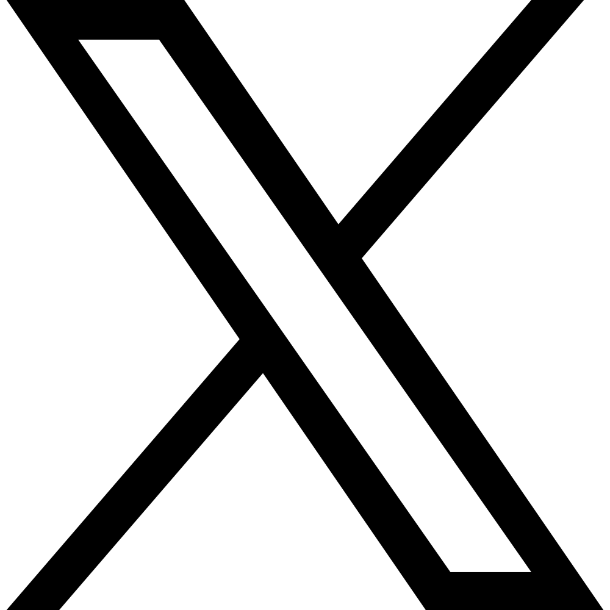
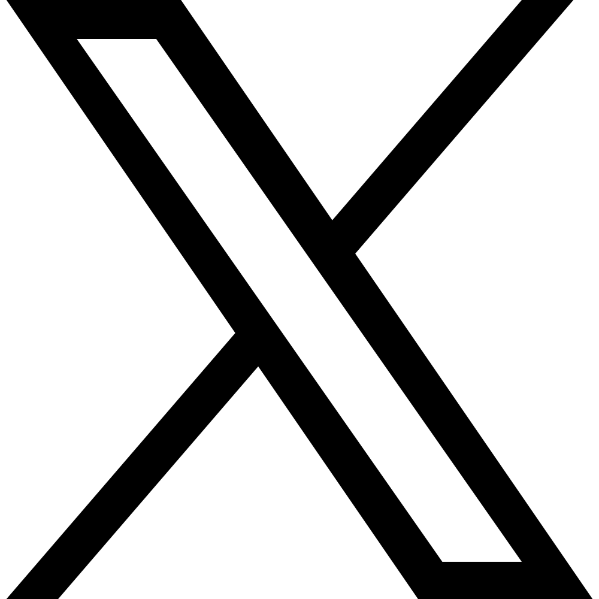

Magyar Mátyás
 

Hi, I'm Mátyás.
I build and develop websites.
Hello, Mátyás vagyok.
Weboldalakat tervezek és készítek.
About me
I'm 20 years old living in Budapest. I'm a third grade student of Psychology BA at ELTE PPK. I started learning web development as a hobby, but it quickly became my passion. I'm currently working on my first big project, a website for a local business.
Besides my university studies I like to go on trips and concerts. I'm also interested in photography and music. I enjoy drinking tea and I have a beautiful black cat.

HTML5

CSS3

JavaScript
Tailwind CSS

Git


GitHub
Húsz éves vagyok és Budapesten élek. Az ELTE PPK harmadéves pszichológia BA hallgatója vagyok. Hobbiként kezdtem foglalkozni a webfejlesztéssel, de hamar szenvedélyemmé vált. Jelenleg első nagy projektemen dolgozom, egy vállalkozás weboldalán.